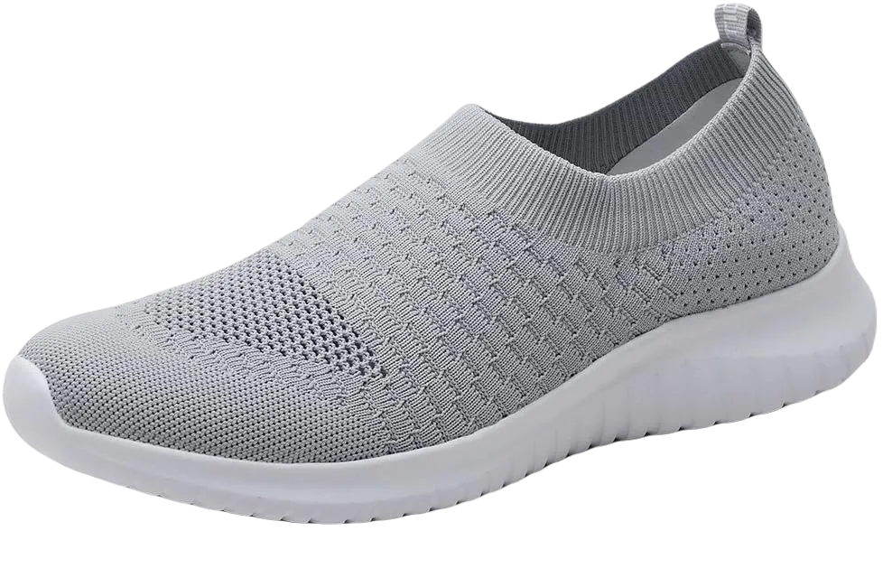
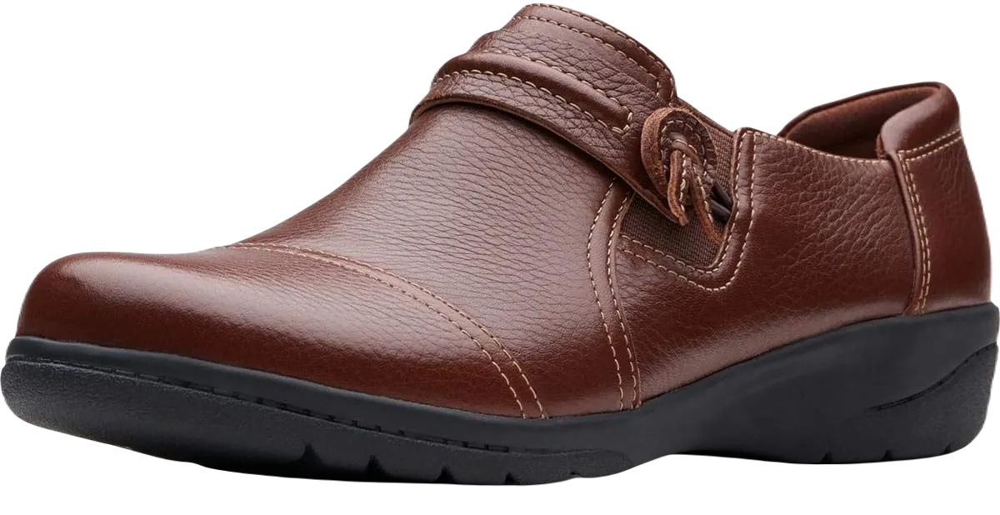
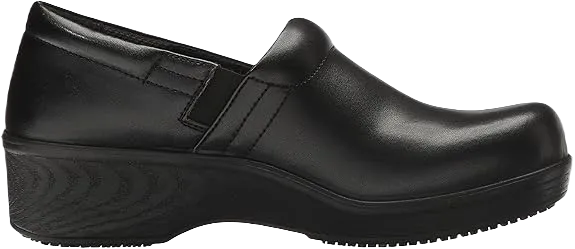

9 Best Shoes for Cashiers Review 2024
People often notice our Best Shoes for Cashiers when they first meet us, as footwear plays a significant role in our overall dress code. Cashiers, in particular, are expected to maintain a tidy appearance, which includes their choice of shoes. Being on your feet all day is a demanding task, and if cashiers wear low-quality shoes, it can lead to foot strain that ultimately affects their performance. Staying updated in appearance, including wearing shoes that fit the work environment, is essential for cashiers.
Standing for long periods in uncomfortable shoes can be frustrating and detrimental to one's well-being. If you're a cashier or have a job that requires you to be on your feet, prioritizing quality footwear is crucial. Wearing the wrong shoes for extended hours can increase the risk of foot injuries and discomfort, as many people suffer from foot ailments due to poor shoe choices. The right shoes not only enhance your appearance but also contribute significantly to your comfort and overall foot health.
-
#1
TIOSEBON Women’s Athletic shoe
This shoe is an excellent choice for your work as a cashier. Opting for the TIOSEBON footwear has proven to be the ideal solution for anyone in this role. Its stylish and trendy design aligns perfectly with the professional atmosphere of the workplace. Made from high-quality fabric, the shoe ensures durability and comfort throughout the day. The lightweight construction allows for a relaxed feel, enabling a gliding gait, while the flexible sole provides a springy sensation that lasts all day.
One common issue with enclosed shoes is foot odor, but the breathable mesh design of the TIOSEBON keeps your feet fresh and clean. Its moisture-wicking properties and proper ventilation ensure that your feet stay dry, even during long hours of wear. The soft and cushioned material allows for swift movement, while the internal cushioning offers support from heel to arch.
Thanks to its anti-slip properties, you can walk confidently without fear of slipping, even on wet or slippery floors. The waterproof material helps maintain a neat and clean appearance, preventing stains from dirtying the shoe. This TIOSEBON footwear is highly suitable for cashiers and bank workers, offering both style and functionality in the workplace. -
#2
Timberland PRO Men’s 6″
.webp)
Timberland Company is known for producing comfortable, high-quality footwear, and this shoe is no exception. Its steel toe provides essential protection against injuries, meeting ANSI safety standards for extra security. Crafted from the finest quality leather, this shoe is perfect for cashiers in a banking environment who need to maintain a polished appearance.
The non-slip rubber outsole is designed for optimal grip, providing secure footing on various surfaces, whether wet or rough. The spacious design ensures that your feet fit comfortably, making it ideal for individuals with foot conditions like bunions or hammertoes.
Available in a variety of colors, this Timberland shoe allows you to choose according to your personal style and preferences. Its durability and high-quality leather make it an excellent choice for cashiers, ensuring that they not only look great but also enjoy the benefits of superior comfort and support throughout their workday. -
#3
Adidas Women’s Cloud-foam QT
.webp)
If you're in search of a shoe that combines style and durability, look no further than this exceptional offering from Adidas. As a globally recognized brand, Adidas is known for its commitment to quality across all its products. This particular shoe stands out with its unique design and stylish appeal. Crafted entirely from high-quality fabric, this man-made shoe provides a comfortable and soothing experience, making it an ideal choice for cashiers who need to stand for extended periods.
The shoe features soft cushioning that acts as a protective layer, keeping your feet comfortable during long hours of standing. The inner sole is made from therapeutic synthetic material, which provides excellent support and a perfect fit. In addition to comfort, the synthetic sole boasts impressive anti-shock properties, enhancing your overall walking experience. The carefully stitched fabric adds an attractive touch, making these shoes both functional and stylish.
You won’t have to worry about the weight of this footwear, as the Adidas shoe is incredibly lightweight, allowing for quick and unrestricted movement. Among its many features, the metallic heel and optimal arch support stand out as particularly impressive. The metallic heel acts as a shield, protecting your foot and enabling you to move reflexively without risk of injury. -
#4
CLARKS Women’s Cheyn-Madi Slip-On
This shoe on the list is designed to meet all the needs of a cashier. The demanding nature of standing for extended periods can become quite frustrating without the right footwear. For cashiers working in banks or other environments, prioritizing comfort in your shoes is essential.
This Clark Cheyn-Madi shoe incorporates premium features and qualities that make it an excellent choice. Additionally, the leather used in its construction gives it an attractive and elegant look, suitable for formal occasions.
The shoe features a synthetic sole that offers stability while walking, along with excellent arch support. With a heel height of approximately 1.2 inches, you can enjoy swift and secure movements throughout your day. The soft cushioning within the shoe ensures that your flat feet remain comfortable and well-supported during prolonged wear. Overall, this shoe enhances both arch and heel support, providing a relaxing experience even when standing for long hours. -
#5
Skechers for Work Women’s Ghenter Bronaugh
.webp)
This Skechers shoe is an ideal choice for cashiers, boasting nearly all the qualities you’d want in a work shoe. Designed with lightweight materials, it provides the soothing and relaxing comfort necessary for long hours of standing and interacting with customers. The upper part of the shoe is crafted from a mesh netting, ensuring optimal airflow and ventilation for your feet.
Featuring a rubber outsole, this shoe offers exceptional traction and grip, making it stable on various surfaces. The rubber construction enhances its contact with the ground, significantly reducing the risk of tripping and falling. Its slip-resistant design is particularly beneficial for navigating smooth or slippery floors, ensuring safety while you work.
For added comfort, the shoe is equipped with soft footbeds and cushioning that have been thoughtfully embedded to enhance your ease during long shifts. This attention to detail ensures that your feet remain comfortable and supported throughout your busy day. -
#6
Dr. Scholls women’s dynamo
This shoe has been highly rated as one of the best options for cashiers and individuals with standing jobs. Being on your feet all day can be tiring, and if your footwear causes irritation, it only adds to the frustration. Choosing the right shoe is essential, not just for comfort but also for overall foot health.
The DR. Scholl shoe is crafted from quality materials specifically designed to provide cashiers with day-long comfort. Its outer sole features slip-resistant technology that effectively repels greasy and oily substances, ensuring excellent traction on various surfaces. Inside, the shoe is equipped with memory foam that offers an extra layer of smoothness while walking or navigating stairs.
In addition to its soft footbeds, the shoe features an anti-compression insole that allows you to move about freely and comfortably. The Dri-lex lining quickly absorbs sweat and moisture, keeping your feet fresh even on hot days. -
#7
Skechers Women’s Go Walk 3
.webp)
Skechers is known for creating stylish and comfortable footwear, making it an excellent choice for working women who spend much of their day on their feet. This particular shoe emphasizes comfort, offering a trendy and feminine design that fits well within a professional cashier environment. The upper part is crafted from high-quality, breathable mesh, ensuring proper airflow to keep your feet relaxed and healthy throughout the day.
Designed with features that prioritize comfort, this lightweight shoe allows cashiers to walk freely and quickly. Inside, it incorporates memory foam for added support around the ankle and heel, along with extra cushioning to keep the forefoot relaxed. The shock-absorbing sole is engineered to handle impacts and hard surfaces, providing a durable and pleasant wearing experience.
Available in a variety of elegant designs, the appealing stitching enhances the overall aesthetic of the shoe. For cashiers facing long shifts that require extended periods of standing, this shoe is an ideal choice, combining style, comfort, and functionality. -
#8
Nike Vomero shoe
.webp)
This shoe is specifically designed with the essential features that cashiers need for comfort and relaxation during long hours of work. Its unique design includes elements that transform your job into a more enjoyable experience, allowing you to focus on your tasks without discomfort.
The outsole is constructed to be quite firm, providing excellent grip with each step you take. The traction offered by this shoe ensures optimal performance on a variety of surfaces, making it reliable for everyday use.
Additionally, the shoe features a high arch, making it an ideal choice for individuals with high-arched feet. This supportive design helps alleviate discomfort and provides the necessary support for those who need it most. -
#9
New balance 577
.webp)
This New Balance shoe is specifically designed for individuals with high arches, making it an excellent choice for cashiers in need of proper support. If you require a shoe that accommodates your high arch, you'll find this model incredibly comfortable. Without adequate arch support, your gait can be affected, leading to potential foot pain over time.
In addition to providing arch support, this shoe also offers effective protection against shocks and impacts. Its soft and flexible materials ensure both comfort and durability, making it suitable for long hours of standing and walking.
The snug fit of this shoe is particularly beneficial for those who walk briskly, as it helps maintain stability and reduces the risk of discomfort. Overall, this shoe is a fantastic option for anyone looking to enhance their comfort while on the job.